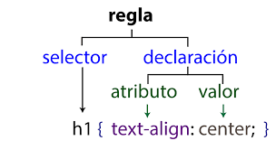

4. HOJAS ESTILO CSS
4. HOJAS ESTILO CSS
Con todo lo visto hasta ahora, podemos controlar el tipo de letra, color y posición de los títulos y textos de un documento editado en HTML. Si realizamos un documento extenso, con varios tipos de letra, colores, etc., el código se complica ya que hay que utilizar muchos elementos de formato de texto.
A partir de la versión 5 de HTML se han incluido las hojas de estilos CSS, que simplifican enormemente el formato de texto dentro de un documento HTML, ya que separa el contenido de la página del diseño de la misma.
Una hoja de estilos es un archivo con extensión .css que contiene los formatos de texto prediseñados de algunas etiquetas.
El archivo .css debe ir junto al archivo .html, aunque también puede incluirse el contenido del archivo .css dentro del archivo .html.
Las hojas de estilo están formadas por reglas, y las reglas están formadas por el selector y entre llaves las declaraciones separadas por punto y coma.
Una declaración es un atributo (propiedad) seguido por dos puntos y a continuación el valor de la propiedad.
Ejemplo: El siguiente código HTML contiene una definición de estilo para los párrafos. En dicha página, todos los párrafos serán de color rojo y centrados (a menos que se indique lo contrario en un párrafo concreto).
<!DOCTYPE html>
<html lang="es-ES">
<head>
<meta charset="utf-8">
<title>Ejemplo de párrafo rojo y centrado</title>
<style>
p {
color: red;
text-align: center;
}
</style>
</head>
<body>
<p>Esto es un párrafo de color rojo y centrado.</p>
</body>
</html>También podríamos incluir la siguiente línea en nuestro código HTML, que nos enlaza con un archivo llamado estilos.css:
<!DOCTYPE html>
<html lang="es-ES">
<head>
<meta charset="utf-8">
<title>Ejemplo de párrafo rojo y centrado</title>
<link rel="StyleSheet" href="estilos.css" type="text/css">
</head>
<body>
<p>Esto es un párrafo de color rojo y centrado.</p>
</body>
</html>El archivo estilos.css contendría la definición de los estilos:
p {
color: red;
text-align: center;
}📝 ACTIVIDADES (8)
- 쯈ué son las hojas de estilo?
- 쯈ué ventajas tiene el usar una hoja de estilos en una página HTML?
- 쯈ué partes tienen las definiciones de las hojas de estilo?
- Explica los dos métodos que existen de aplicar las hojas de estilo.
Obra publicada con Licencia Creative Commons Reconocimiento Compartir igual 4.0